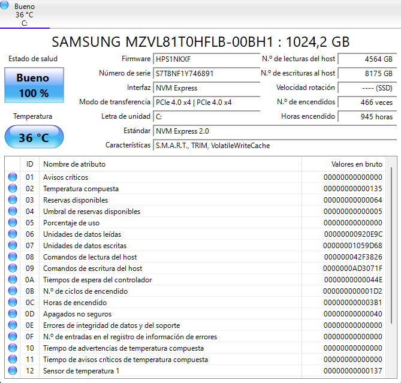
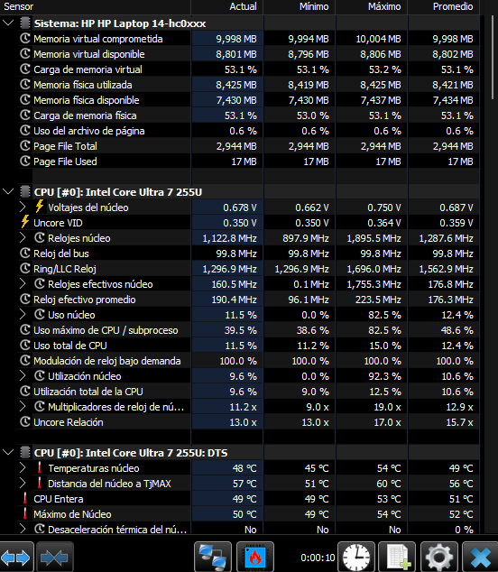

Caso de Estudio #01 • Soporte N1/N2 & Diagnóstico
Auditoría de Hardware, Telemetría y Control Térmico en Portátil HP 14
Análisis S.M.A.R.T., monitorización de sensores térmicos y resolución de conflictos de telemetría oneAPI en Windows 11.
1. Resumen del Equipo y Objetivo
- Equipo: Portátil HP 14 (
hp14) - CPU / GPU: Intel Core Ultra 7 255U + Intel Arc/Xe Graphics
- Memoria RAM: 16 GB
- Sistema Operativo: Windows 11 (Build 26300)
Objetivo técnico: Ejecutar una auditoría preventiva de salud del almacenamiento, evaluar la eficiencia térmica del procesador bajo carga ligera y resolver un fallo crítico de inicialización en herramientas de diagnóstico de bajo nivel.
2. Diagnóstico de Hardware y Telemetría
Almacenamiento (Análisis S.M.A.R.T. con CrystalDiskInfo)
- Estado de salud general: Bueno (100%) — Sin sectores reasignados ni errores críticos de lectura/escritura.
- Conclusión: Unidad SSD en parámetros óptimos para entornos de trabajo y virtualización local.

Rendimiento Térmico y CPU (HWiNFO64)
46 °C
Temperatura en Reposo (Idle)
54 °C
Pico Máximo Registrado
0 %
Thermal Throttling
Análisis térmico: El procesador opera muy por debajo del umbral crítico (90 °C – 100 °C). El sistema de disipación mantiene frecuencias estables sin activar mecanismos de estrangulamiento térmico.

3. Resolución de Incidencias Técnicas Durante el Diagnóstico
Durante la recolección de métricas con HWiNFO64 (v8.60), el programa sufría un cierre inesperado (crash) en la fase de Detección de GPU.
- Análisis forense inicial: Mediante PowerShell (
Get-CimInstance Win32_VideoController) se verificó que el driver OEM de Intel (32.0.101.8424) estaba actualizado y operativo, descartando fallos físicos. - Aislamiento del conflicto: Se detectó un choque en la inicialización de la librería de telemetría
Intel oneAPIsobre la GPU integrada moderna. - Solución aplicada: Se deshabilitó el sondeo de Soporte oneAPI y del Embedded Controller (EC) en los ajustes de seguridad (Safety) de HWiNFO, logrando una lectura estable sin alterar el controlador gráfico OEM.
4. Conclusiones y Optimización
- Gestión de arranque: Auditoría de servicios residentes en el inicio de Windows 11 para optimizar el consumo de memoria RAM en reposo.
- Veredicto técnico: Equipo certificado en óptimas condiciones de estabilidad térmica y salud de almacenamiento.